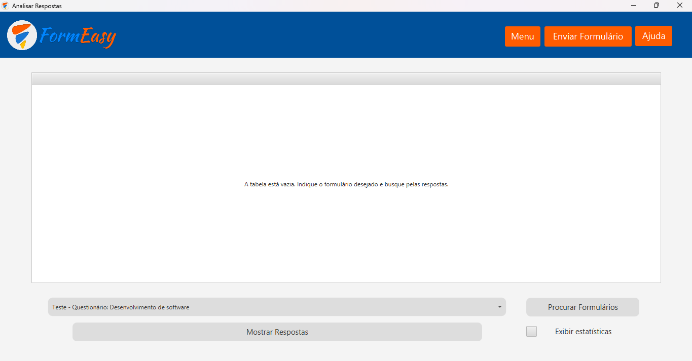
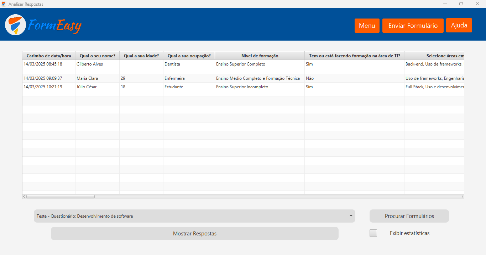
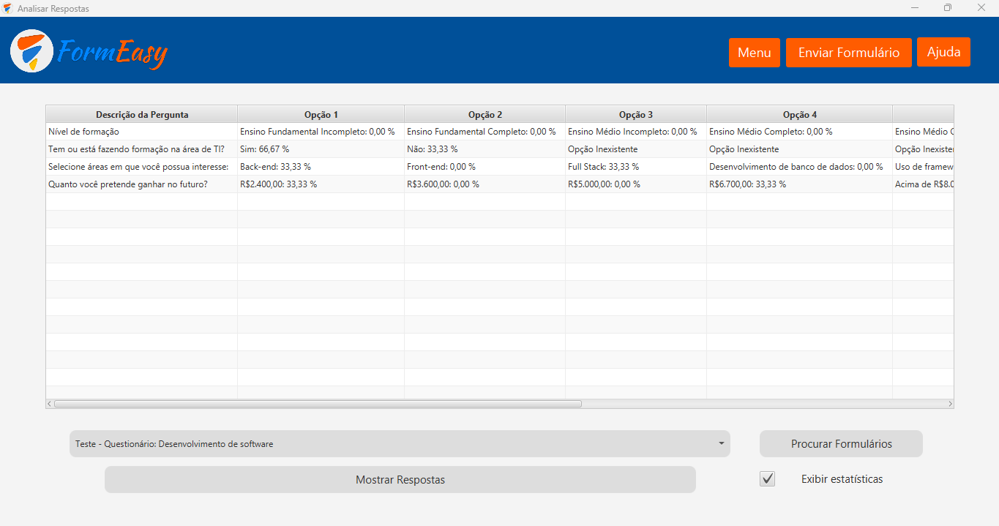

Ao clicar no botão de "Entrar com o Google", irá aparecer uma tela com um campo pedindo seu e-mail e logo após pedindo sua senha.
Caso seu email esteja ativado a funcionalidade de verificação em duas etapas, será necessário fazer essa verificação com o auxílio do celular, dependendo da opção selecionada
Ao fazer isso, irá aparecer uma tela dizendo que a aplicação não é segura, isso acontece porque não é um app licenciado pela Google, é apenas um teste, para prosseguir aperta o botão "Continuar".
Logo após essa confirmação de app não seguro, irá aparecer uma tela dizendo que o usuário está fazendo o login com o FormEasy, aperta o botão "Continuar".
Trazendo o usuário para uma tela onde será mostrado os serviços que a aplicação está usando e questões de politícas da aplicação, aperta o botão "Continuar". Com isso, o usuário será autenticado pelo Google, permitindo que esse usuário utilize a aplicação sem problemas.
Estando na tela inicial, o usuário tem duas opções: Enviar Formulário e Analisar Respostas. Caso o usuário deseje enviar formulários em massa, clique em "Enviar Formulário".
Ao abrir a tela de envio de e-mails, é obrigatório colocar um Assunto, o título do e-mail, uma Descrição, uma mensagem com um link de formulário que deseja ser enviado e Adicionar uma planilha com os e-mails das pessoas que o usuário deseja enviar essa mensagem.
Com tudo isso feito, é só apertar o botão de "Enviar".
Estando na tela inicial, o usuário tem duas opções: Enviar Formulário e Analisar Respostas. Caso o usuário deseje analisar as respostas do formulário que foi enviado e respondido, clique em "Analisar Respostas".
Ao abrir a tela de análise de respostas, o usuário deverá apertar o botão de "Procurar Formulários" para ativar a busca pelo formulário. Ao fazer isso, o usuário deverá clicar no botão que contém uma seta para baixo. É a partir desse clique que aparecerá os formulários disponiveís para análise.
Ao selecionar esse formulário, o usuário deve clicar no botão de "Mostrar Respostas", responsável por mostrar as respostas feitas pelo usuário no formulário.
Caso o usuário deseje ver o seu percentual, seleciona a checkbox de "Exibir Estatísticas" e aperta o botão "Mostrar Respostas".
Para mudar de conta, é necessário clicar na aba de perfil e ao clicar no botão "Mudar de conta" automaticamente a aplicação voltará para a tela de login com a sessão do usuário finalizada.
Para sair da aplicação, tem duas formas: Clicar no "X" na parte superior direita ou Acessar a aba de perfil e clicar no botão "Sair", irá aparecer esse alerta de confirmação de saída para o usuário. Caso esse usuário deseje sair da aplicação, ele deverá apertar o botão "OK". Caso contrário, aperta o botão de "Cancelar".
viniciusalves081105@gmail.com e klesley.pfeitosa@gmail.com